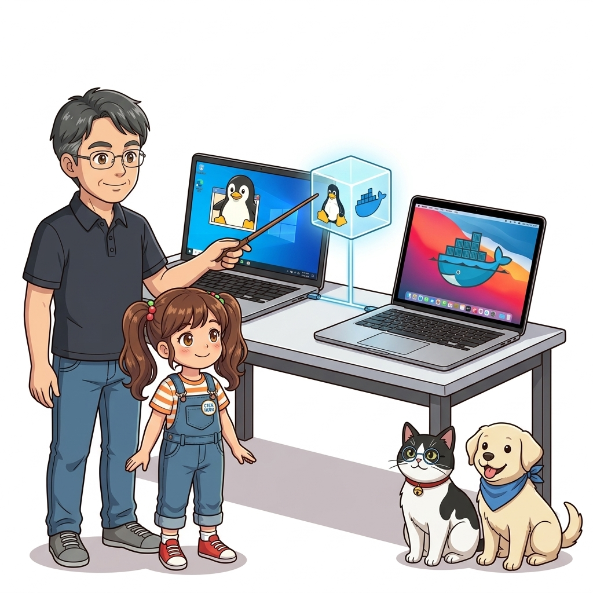
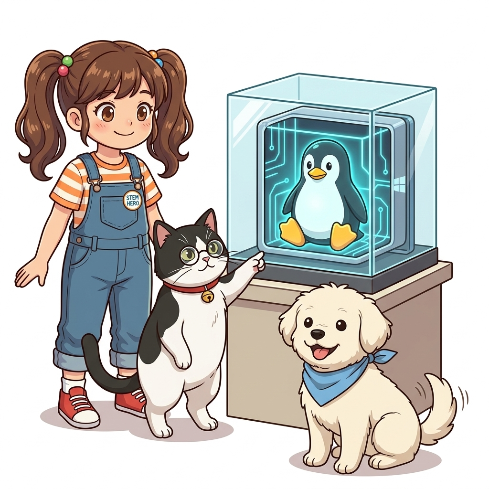
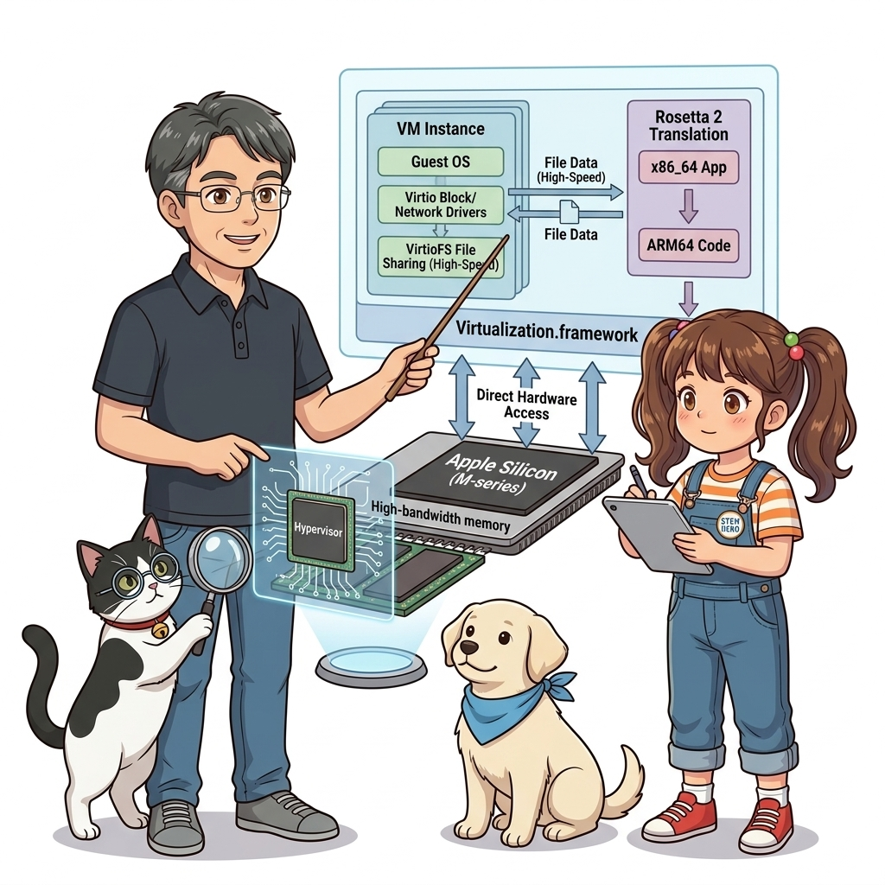
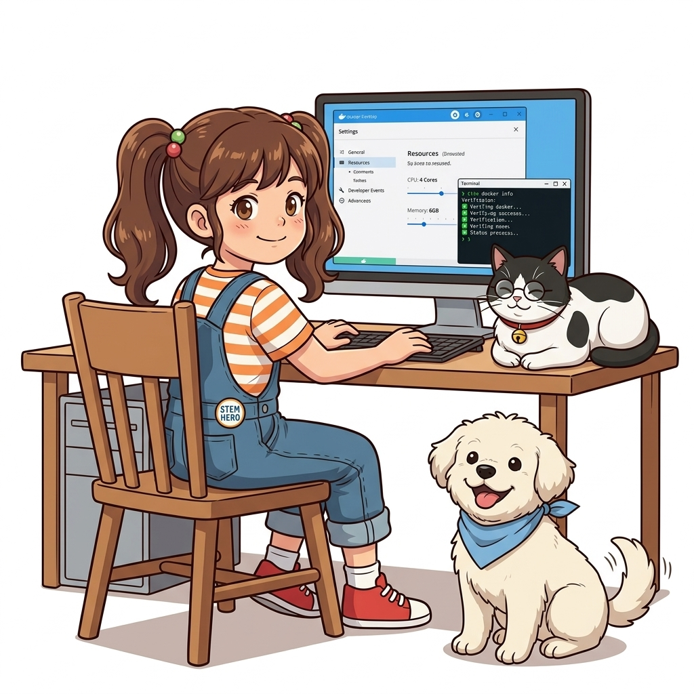
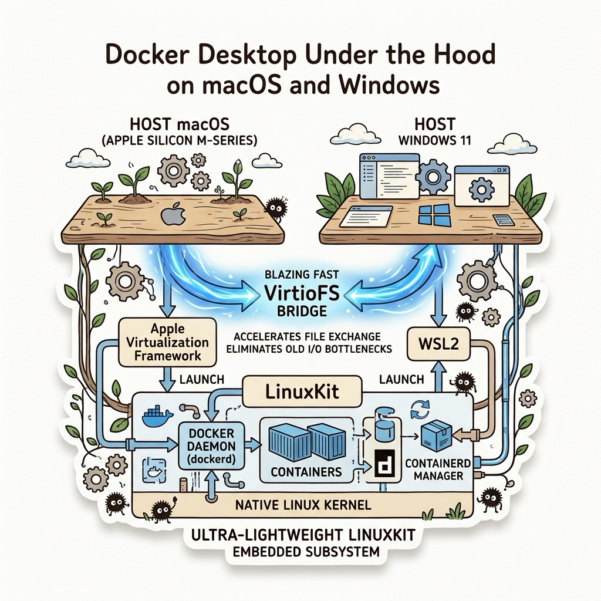

003. 실습 환경 구축 1: Windows WSL2와 macOS Apple Silicon/Intel Docker Desktop
도커 컨테이너 기술은 태생적으로 리눅스 커널(Linux Kernel)의 독자적인 프로세스 격리 기술(Namespaces, Control Groups)에 기반을 두고 있습니다. 따라서 리눅스 운영체제에서는 도커 엔진이 커널 위에서 네이티브(Native)하게 직접 실행되지만, 대다수의 개발자들이 일상적으로 사용하는 마이크로소프트 윈도우(Windows)나 애플 맥(macOS)은 리눅스 커널을 내장하고 있지 않습니다.

그림 01-4-1 Windows와 macOS 환경에서 리눅스 컨테이너를 구동하기 위한 가상화 백엔드 아키텍처그렇다면 윈도우와 맥에서는 어떻게 리눅스 컨테이너를 그토록 빠르고 매끄럽게 구동할 수 있을까요? 이번 절에서는 과거의 무거운 가상머신 방식(VirtualBox 기반의 도커 툴박스)에서 탈피하여, 오늘날의 초경량 네이티브 하이퍼바이저 백엔드로 진화한 Docker Desktop의 내부 아키텍처와 최적의 리소스 튜닝법을 상세히 파헤쳐 봅니다.
003.1 Windows 환경의 혁명: WSL2 (Windows Subsystem for Linux 2)
과거 윈도우에서 도커를 돌리기 위해서는 Hyper-V 가상머신을 통째로 띄우거나 VirtualBox를 써야 했기에 시스템 부팅이 느리고 메모리를 기가바이트 단위로 낭비했습니다. 하지만 마이크로소프트가 WSL2를 발표하면서 판도가 완전히 바뀌었습니다.

그림 01-4-2 윈도우 커널과 완벽한 정품 리눅스 커널이 경량 가상화(Hyper-V 격리)를 통해 공존하는 WSL2 아키텍처WSL2의 핵심 특징:
- 진짜 완전한 리눅스 커널 탑재: 에뮬레이션이 아니라 마이크로소프트가 직접 빌드한 최신 롱텀(LTS) 리눅스 커널이 윈도우 내부에서 실행됩니다.
- 경량 유틸리티 VM (Lightweight Utility VM): 1초 미만의 초고속 부팅과 함께, 사용하지 않는 메모리를 자동으로 윈도우 호스트로 반환하는 동적 메모리 할당을 지원합니다.
- 99% 이상의 완벽한 시스템 콜 호환성: cgroups v2, 오버레이 파일시스템(OverlayFS), eBPF 등 도커 엔진이 요구하는 최신 리눅스 커널 기능을 100% 네이티브 속도로 처리합니다.
💡 Windows 사용자 권장 설치 절차
PowerShell을 관리자 권한으로 실행한 후 아래 명령어로 WSL2를 활성화하고 도커 데스크톱을 설치합니다:
# WSL2 최신 리눅스 커널 설치 및 활성화
wsl --install
# 기본 WSL 버전을 2로 설정
wsl --set-default-version 2
# 설치된 배포판 및 WSL 버전 확인
wsl --list --verbose
003.2 macOS 환경의 진화: Virtualization.framework와 Apple Silicon
맥(macOS)은 유닉스(UNIX) 계열 운영체제이지만, 커널은 리눅스가 아닌 XNU (Darwin/Mach) 커널을 사용합니다. 따라서 맥에서도 도커 컨테이너를 실행하기 위해서는 초소형 리눅스 VM 레이어가 반드시 필요합니다.

그림 01-4-3 Apple Silicon(M1~M4)의 ARM64 아키텍처와 macOS 가상화 프레임워크를 활용한 도커 구동최신 macOS 환경의 Docker Desktop 핵심 최적화:
- Apple Virtualization.framework 채택: 과거의 무거운 가상화 계층 대신, 애플 공식 하이퍼바이저 API를 사용하여 CPU 사용량을 획기적으로 낮추고 배터리 효율을 극대화했습니다.
- VirtioFS 고속 파일 공유: 맥 호스트 디렉터리를 컨테이너에 바인드 마운트할 때 발생하던 지독한 파일 I/O 병목 현상을 VirtioFS 가속 기술로 최대 10배 이상 개선했습니다.
- Rosetta 2 for Linux (Apple Silicon 전용): M1/M2/M3/M4 실리콘 맥에서 x86_64(인텔 64비트) 전용 도커 이미지를 구동할 때, 애플의 강력한 바이너리 변환 엔진인 Rosetta를 리눅스 가상머신 내부에 주입하여 네이티브에 준하는 놀라운 에뮬레이션 성능을 발휘합니다.
📊 OS별 Docker Desktop 백엔드 비교
| 플랫폼 구분 | 가상화 백엔드 기술 | 파일 시스템 공유 가속 | 권장 리소스 설정 가이드 |
|---|---|---|---|
| Windows 10/11 | WSL2 (Microsoft Linux Kernel) | 9P 프로토콜 / WSL2 네이티브 vhd | 메모리: 최소 4GB (8GB 권장), .wslconfig로 상한선 제어 |
| macOS (Apple Silicon) | Apple Virtualization.framework | VirtioFS (Docker Desktop 설정에서 활성화) | CPU: 코어 수의 절반, 메모리: 최소 4GB, Rosetta 체크 활성화 |
| macOS (Intel Core) | HyperKit / Virtualization.framework | gRPC FUSE / VirtioFS | CPU: 2~4코어, 메모리: 최소 4GB, Swap: 1~2GB |
003.3 도커 데스크톱 리소스 튜닝 및 터미널 통합 검증
도커 데스크톱을 설치한 후 기본 설정 그대로 방치하면 개발 도중 팬이 심하게 돌거나 노트북 배터리가 급격히 소모될 수 있습니다. 다음 설정을 점검하십시오:
- Settings > Resources:
- CPU: 보유한 전체 코어 수의 50% 할당 (예: 8코어인 경우 4개 할당)
- Memory: 전체 램의 25~50% 할당 (16GB RAM 기준 4GB~6GB 할당)
- Swap: 1GB~2GB 설정 (SSD 수명 보호를 위해 과도한 스왑 방지)
- Virtual disk limit: 64GB 내외 설정
# [실습 003-1] 터미널에서 도커 엔진 상태 및 시스템 리소스 확인
docker info
# [실습 003-2] 현재 활성화된 도커 컨텍스트(Context) 확인
docker context ls
🔍 Docker Desktop 내부 3계층 아키텍처 (Mermaid Diagram)
flowchart TD
subgraph HostOS["Host Operating System (Windows / macOS)"]
UI["🖥️ Docker Desktop GUI Dashboard"]
CLI["💻 docker CLI (Terminal)"]
end
subgraph Hypervisor["Lightweight Hypervisor (WSL2 / Apple Virtualization)"]
MicroVM["🐧 Tiny Linux VM (Alpine / Custom Linux Kernel)"]
MicroVM --> Dockerd["🐳 Docker Engine Daemon (dockerd)"]
Dockerd --> Containers["📦 Running Containers (PID, NET, MNT Isolated)"]
end
CLI -->|UNIX Domain Socket / Named Pipe| Dockerd

그림 01-4-4 터미널 CLI와 도커 데스크톱 대시보드가 리눅스 가상머신 엔진과 통신하는 아키텍처003.B 📚 도커 바이블 심화: Docker Desktop 언더 더 후드: LinuxKit 서브시스템과 VirtioFS 가속 메커니즘
출처 및 학술적 배경: 『15단계로 배우는 도커와 쿠버네티스』 제1장 (1.13 가상 서버와 컨테이너의 차이점: LinuxKit 생태계) & 『제대로 배우는 도커』 제2장 (설치하기)
핵심 주제: 비-리눅스 OS에서 도커 데몬을 지탱하는 LinuxKit 초경량 서브시스템, 호스트-컨테이너 간 파일 I/O 병목을 해결하는 VirtioFS 가속 원리, 그리고 Windows WSL2 메모리 폭주 방지(.wslconfig) 튜닝.
1. LinuxKit: 컨테이너 전용 미니멀 리눅스 서브시스템
macOS와 Windows에는 리눅스 커널이 없기 때문에, 도커는 사용자가 의식하지 못하는 백그라운드에 초경량 리눅스 서브시스템인 LinuxKit을 기동합니다:
- 탄생 배경: 도커(Docker), IBM, Microsoft, Linux Foundation, ARM, HPE, Intel이 오직 컨테이너 실행만을 목적으로 합작 개발한 모듈형 오픈소스 리눅스입니다.
- 초미니멀 설계: 불필요한 OS 유틸리티나 데몬을 모두 배제하고 커널과
containerd런타임만 단 수십 MB 크기로 패키징하여, 사용자가 Docker Desktop을 켤 때 단 1~2초 만에 즉각 백그라운드로 부팅됩니다. - 가상화 브리지:
- macOS: 과거 HyperKit에서 현대의 Apple 공식 Virtualization.framework로 진화하여 네이티브 하이퍼바이저 가속을 받습니다.
- Windows: Hyper-V 가상화 기반의 WSL2(Windows Subsystem for Linux 2) 엔진과 통합되어 구동됩니다.
2. 파일 공유의 진화와 VirtioFS의 10배 I/O 혁신
로컬 소스코드를 컨테이너에 바인드 마운트할 때, 호스트 OS 파일시스템(macOS APFS, Windows NTFS)과 컨테이너 내부 리눅스 파일시스템 간의 변환 오버헤드는 개발자의 오랜 골칫거리였습니다:
- 과거(osxfs / 9P 프로토콜): Node.js의
node_modules나 PHP 프레임워크처럼 수만 개의 작은 파일이 존재하는 프로젝트에서npm install이나 코드 핫리로드 시 수 분씩 멈추는 극심한 병목이 발생했습니다. - 현대 표준(VirtioFS): 리눅스 커널의
vhost-user공유 메모리 기반 가상화 직접 매핑 기술을 적용하여, 파일 메타데이터 조회를 제로 카피(Zero-Copy)로 처리합니다. 그 결과 파일 읽기/쓰기 속도가 기존 대비 최대 10배 이상 비약적으로 향상되었습니다.
3. Windows 환경 필수: .wslconfig를 통한 메모리 누수 방지
Windows WSL2는 기본적으로 호스트 RAM의 최대 80%까지 동적으로 잠식할 수 있어, 장시간 도커를 쓰다 보면 PC 전체가 버벅거리는 현상이 발생합니다:
# %UserProfile%\.wslconfig 파일 생성
[wsl2]
memory=6GB # WSL2 가상머신이 점유할 최대 RAM 상한선 지정
processors=4 # 할당할 논리 CPU 코어 수
swap=2GB # 스왑 파일 크기
guiApplications=false

그림 003-B-1 Docker Desktop의 LinuxKit 서브시스템과 VirtioFS 가속 아키텍처 도식# [실습] Docker Desktop 내부 리눅스 VM 커널 및 마운트 드라이버 확인
# 1. 도커 데스크톱 내부 LinuxKit 커널 정보 조회
docker run --rm alpine uname -a
# 2. 호스트 파일시스템 마운트 속도 및 파일 공유 방식 점검
docker run --rm -v $(pwd):/workspace alpine df -T /workspace
👨🏫 이호진 교수님의 바이블 멘토링 노트: “macOS나 Windows에서 도커를 쓸 때는 ‘내 노트북 OS’와 ‘실제 컨테이너가 도는 LinuxKit VM’이라는 두 개의 공간이 존재한다는 사실을 항상 인지해야 합니다. Docker Desktop 설정에서 ‘VirtioFS’를 활성화하고, Apple Silicon 사용자는 ‘Rosetta for x86/amd64 emulation’을 켜두는 것이 실무 개발 생산성을 좌우하는 핵심 비결입니다.”
👧 도로시의 깨달음: “맥북 안에서 작은 리눅스 친구(LinuxKit)가 비밀리에 일하고 있었군요! 작은 파일이 수만 개씩 오갈 때 느려지지 않도록 초고속 다리(VirtioFS)를 놓아주는 게 정말 중요하네요!”
🐱 조교 지니의 아키텍처 체크포인트:
- macOS에서 배터리 절약 모드를 켜면 Virtualization.framework의 CPU 스케줄링 우선순위가 떨어져 도커 빌드 속도가 급격히 느려질 수 있으니 주의하세요.
003.4 핵심 정리: 캐릭터 대화와 3대 교훈
👧 도로시: “아하! 윈도우와 맥은 리눅스 커널이 없으니까, 아주 작고 날렵한 초소형 리눅스 엔진을 밑에 살짝 깔아두고 그 위에서 컨테이너들을 띄우는 원리군요!”
🐱 조교 지니: “야옹~ 정확합니다. 특히 맥에서는 VirtioFS와 Rosetta 2 설정을 켜야 파일 읽기 속도와 인텔 이미지 호환성이 비약적으로 빨라진답니다!”
🐶 토토: “멍멍! 내 컴퓨터 사양에 맞춰 CPU와 램을 딱 알맞게 조절해 두니 팬도 안 돌고 시원해요!”
👨🏫 이호진 교수님: “훌륭하구나. 개발 장비의 특성을 정확히 이해하고 도커 엔진을 튜닝하는 것은 모든 클라우드 네이티브 엔지니어의 가장 기본적인 덕목이란다.”
그림 01-4-5 데스크톱 개발 환경 완성과 리소스 튜닝의 3대 핵심 교훈
- OS별 가상화 백엔드 원리 이해:
- 윈도우는 WSL2, 맥은 Apple Virtualization.framework를 통해 네이티브에 준하는 리눅스 커널 환경을 확보합니다.
- I/O 병목 해소를 위한 VirtioFS 활용:
- 호스트 소스코드와 컨테이너를 공유할 때 최신 파일 공유 엔진을 활성화하여 빌드 및 리로드 속도를 극대화합니다.
- 안정적인 리소스 상한선 설정:
- CPU와 메모리 한도를 호스트 자원의 50% 내외로 적절히 분배하여 개발 머신의 쾌적성을 보장합니다.
003.5 랩노트 피날레와 다음 강의 예고
그림 01-4-6 실제 프로덕션 리눅스 서버에서 GUI 없는 순수 도커 엔진 설치를 예고하는 교수님과 연구팀
💡 다음 강의 안내: 004. 실습 환경 구축 2: Linux 서버 Docker Engine과 CLI 검증에서는 그래픽 UI가 없는 진짜 클라우드 운영 서버(Ubuntu 24.04 LTS / Debian)에 공식 APT 리포지터리를 등록하여 경량 Docker Engine(CE)을 설치하고, 일반 사용자로 안전하게 제어하는 권한 구성(non-root docker group)을 배웁니다!
🧭 강의 네비게이션
- ◀️ 이전 강의: 002_컨테이너가_IT세상을_점령한_이유2_마이크로서비스와_데브옵스
- 📋 Part 01. 컨테이너 혁명과 도커 엔진 기본기 마스터 (000 ~ 014) 목차로 돌아가기
- ▶️ 다음 강의: 004_실습환경구축2_Linux서버_Docker_Engine과_CLI검증